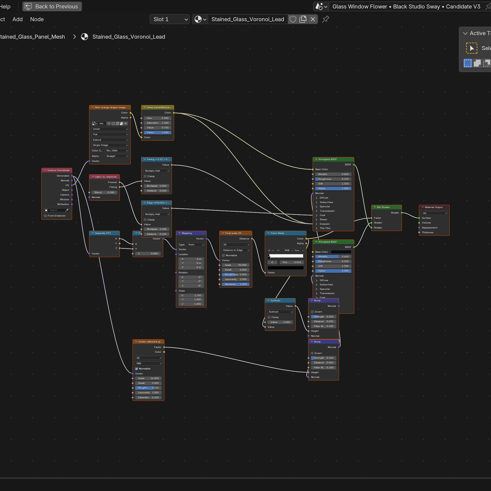
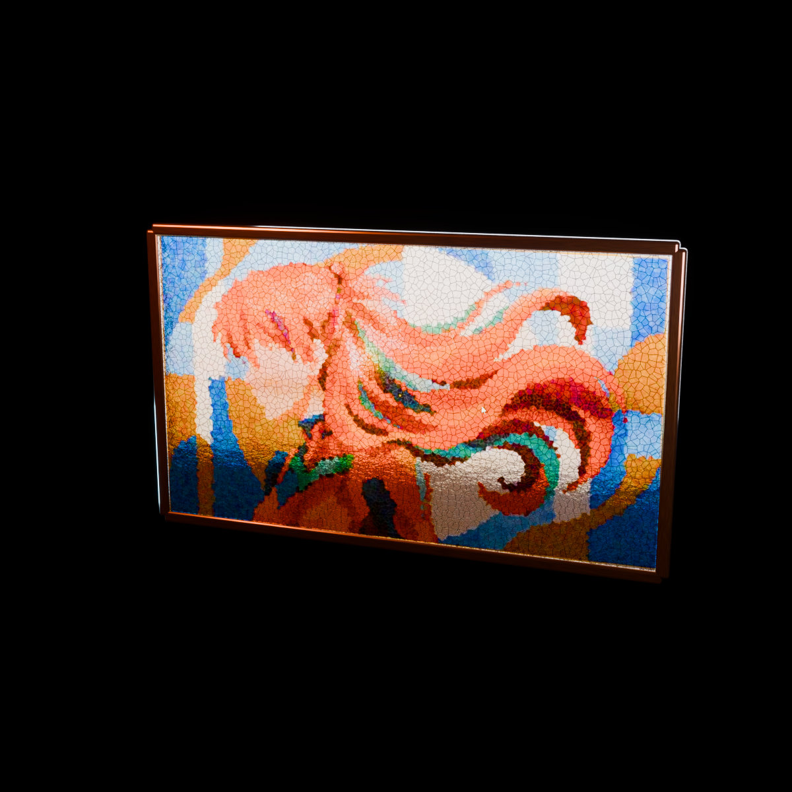
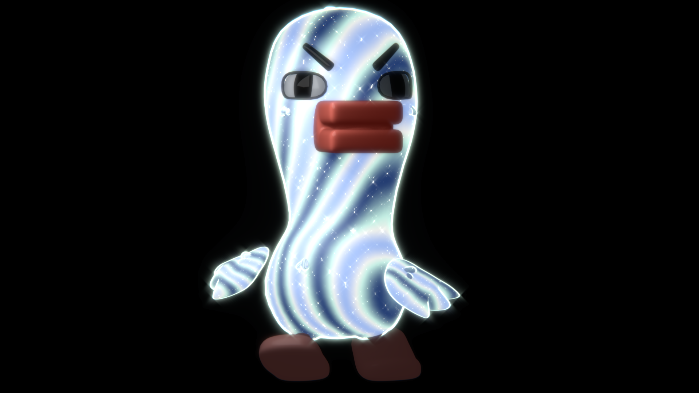
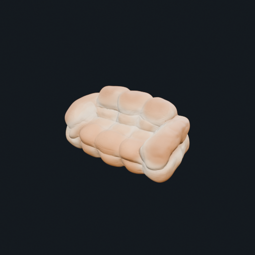

Learn from Tutorials
We parse internet Blender tutorials, recover the demonstrated 3D creation workflows, and translate them into executable code that recreates editable assets.
3D-Coding-Blender
We explore how internet tutorial videos can teach models to generate executable Blender code and recreate editable 3D assets. Our pipeline connects visual demonstrations with real-world 3D creation workflows, and organizes successful reconstructions into reusable knowledge for future tasks. Existing assets provide supporting examples for knowledge bootstrapping, while controlled editing extends the system to combine geometry, materials, lighting, and animation into richer creations.
How It Works
We parse internet Blender tutorials, recover the demonstrated 3D creation workflows, and translate them into executable code that recreates editable assets.
Successful reconstructions are organized into retrievable knowledge—from modeling and materials to lighting, animation, and other workflow-specific techniques. Existing assets and publicly shared tutorial projects help bootstrap and enrich this collection.
Controlled editing extends the pipeline beyond reconstruction, allowing geometry, materials, lighting, and animation to be modified and combined into richer creations.
Showcase
Material workflows learned from tutorials and recreated as executable Blender programs.
Source image and tutorial cover to editable Blender material.

Blender material nodesimage = bpy.data.images.load(SOURCE_IMAGE, check_existing=True)
voronoi = nodes.new("ShaderNodeTexVoronoi")
voronoi.feature = "DISTANCE_TO_EDGE"
set_input(voronoi, "Scale", 50.0)
bpy.ops.wm.save_as_mainfile(filepath=str(OUTPUT_DIR / "asset.blend"))
Stained Glass WindowOriginal yellow asset and material tutorial to a generated chromatic result.
 Blender material nodes
Blender material nodes
noise_large = nodes.new("ShaderNodeTexNoise")
layer_weight = nodes.new("ShaderNodeLayerWeight")
links.new(layer_weight.outputs["Facing"], tint_mix.inputs[0])
links.new(tint_mix.outputs["Color"], principled.inputs["Base Color"])
bpy.ops.wm.save_as_mainfile(filepath=str(OUTPUT_DIR / "asset.blend"))
Chromatic Duck GigiShowcase
Editable objects, scientific visualizations, and practice scenes recreated through Blender workflows.


Showcase
Controlled edits that recombine materials, geometry, lighting, and animation while preserving the source asset.



Additional Showcase
Existing forms reinterpreted through the original iridescent crystal-glass material workflow.